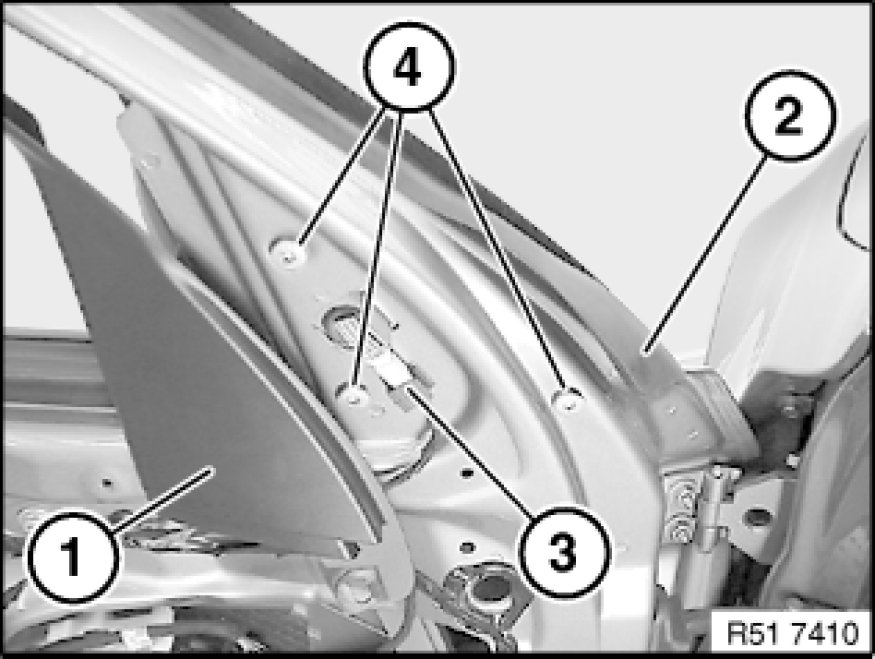
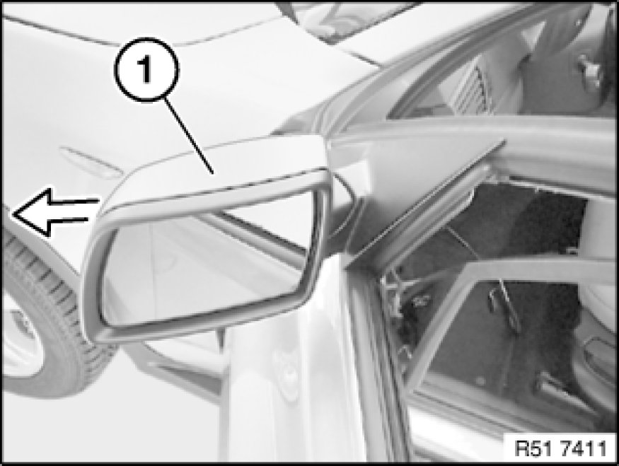

Removing and Installing/Replacing Mirror on Left or Right Front Door
51 16 000 - Removing and installing/replacing mirror on left or right front door

Necessary preliminary tasks:
- Remove front door trim panel Removing and Installing Left or Right Front Door Trim Panel

Press cover (1) and guide rubber (2) to one side.
Disconnect plug connection (3).
Release screws (4).
Tightening torque 51 16 1AZ [1][2][3]Mirrors.
Replacement:
Due to the self-tapping screws, the tightening torque of the new mirror is increased by 2 Nm.

Remove mirror (1) outwards.

Installation:
Sound insulation (1) on mirror (2) must not be damaged.
Check function.

Replacement:
- If necessary, convert mirror glass Replacing Mirror Glass
- If necessary, convert housing on door mirror Removing and Installing/Replacing Housing on Left or Right Door Mirror
- If necessary, convert retaining ring on door mirror Removing and Installing/Replacing Retaining Ring on Left or Right Door Mirror